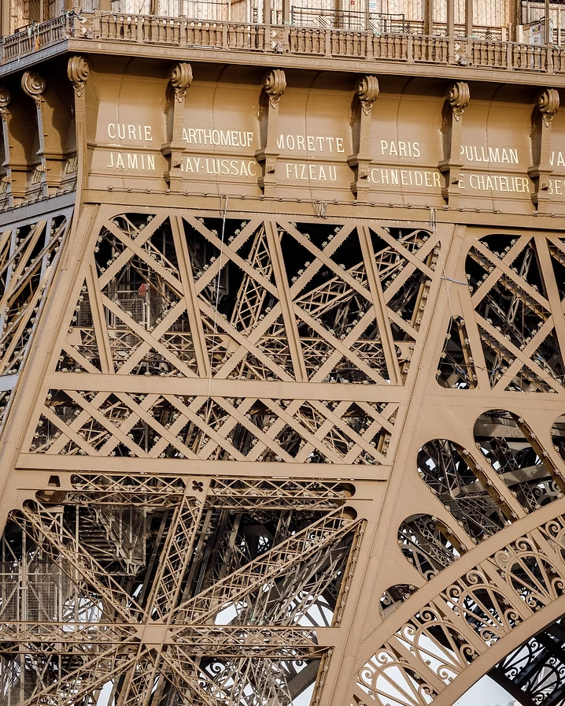

Le design au service de votre institution
Innovation - direction artistique - campagnes d'influence
Diplômé de Sciences Po, du CELSA et de Sorbonne Université,
j'ai travaillé avec EDF, Publicis et l'Observatoire de Paris - PSL
Avec Femmes & Sciences, j'ai initié le projet d'inscription des noms de femmes scientifiques sur la tour Eiffel.

En août 2021, j’étais guide touristique à la tour Eiffel. En montrant la liste des 72 savants qui orne le premier étage du monument, j’ai remarqué qu’aucun nom de femme n’y figure. Le 26 janvier 2026, Isabelle Vauglin de l’association Femmes & Sciences remettait à la maire de Paris Anne Hidalgo une liste de 72 savantes qui seront inscrites elles aussi en lettre d’or sur notre monument national par l'agence d'architecture Pierre Antoine Gatier.

Crédit : Pierre Antoine Gatier Architecte

Le projet KEPLER consiste à transformer en un monument le viaduc Nuselsky de Prague, qui relie le centre historique au nouveau quartier Sud. La projection des 12 constellations du zodiaque sous ce pont soviétique le transformera en un monument à la gloire de Johannes Kepler dont la tombe a disparu durant la guerre de trente ans.
Version moderne de l’horloge astronomique place de la Vielle-ville, KEPLER donnera une image plus positive de ce pont en béton, et glorifie le passé scientifique de Prague, ville historique des grandes découvertes sur l’Univers, depuis Kepler et son maître Tycho Brahe jusqu’à Albert Einstein.
En 2026, avec la philosophe du CNRS Alexandra Michalewski et le cosmologiste François Bouchet, j'ai initié une reflexion entre Nature et Culture sur le Big Bang : l'Athènes du Ve siècle avant J.C ne fut-elle pas le Big Bang intellectuel à l'origine de notre civilisation occidentale ? Et quels furent les autres moment fondateurs des autres civilisations de la planète ?


Depuis sa transformation en Panthéon national, le monument parisien affiche fièrement la devise "Aux grands Hommes, la Patrie reconnaissante". Mais aujourd'hui, comment donner de la visibilité aux femmes qui ont aussi écrit l'Histoire de notre pays ? Le projet Athéna propose de projeter de nuit la phrase "Aux grandes Femmes, la Patrie reconnaissante", avec l'association Défis Sorbonne.

A l'occasion des 550 ans de Copernic, j'ai créé ce drapeau européen qui rends hommage à la théorie de l'Héliocentrisme.